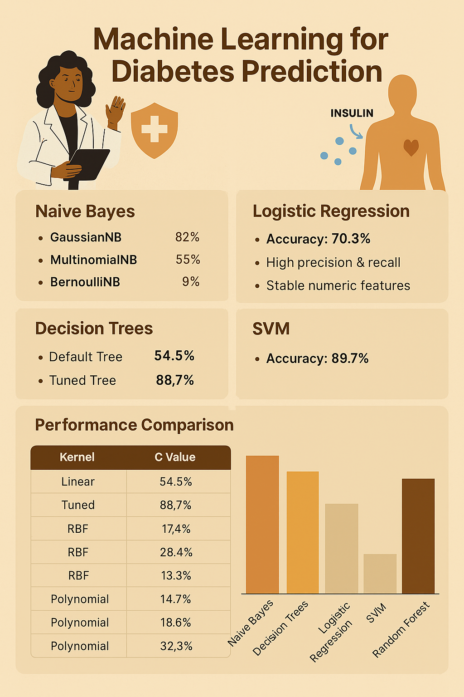
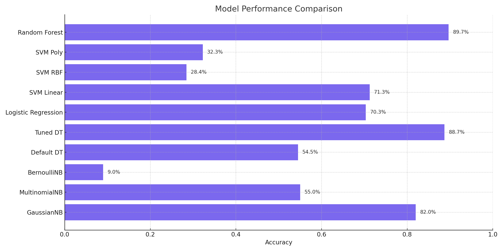

Reflecting on the Journey: Machine Learning for Diabetes Prediction
Throughout this project, we systematically explored the application of machine learning algorithms to understand and predict diabetes outcomes. We worked on everything from cleaning messy real-world healthcare data to building, visualizing, and fine-tuning multiple predictive models. This project was not just about applying algorithms it was about learning the importance of thoughtful data processing, proper evaluation, and responsible model selection.

This project emphasized that data science is not just about achieving the highest possible accuracy it’s about understanding your dataset, respecting its limitations, carefully validating models, and building systems that can offer meaningful, responsible assistance. Our diabetes prediction project proved how interdisciplinary approaches (statistics, machine learning, domain knowledge) can create a real-world impact.
This project was a complete journey across the machine learning pipeline from messy real-world healthcare data to trained predictive models. It taught us that good ML projects require curiosity, patience, discipline, creativity, and communication skills. Moving forward, we are better equipped to design, build, and explain models that don't just predict numbers they can change lives.

Comparison of Model Accuracies Across Methods